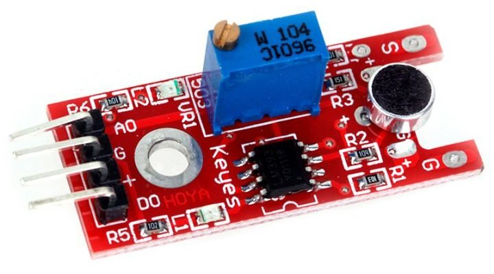
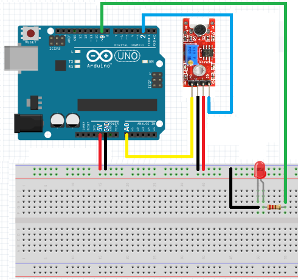

Микрофонные модули KY-038 и KY-037
Модули KY-038 и KY-037 представляют собой датчики звука. Отличаются KY-038 и KY-037 размерами микрофона (рис. 1 и 2). Модуль состоит из микрофона и потенциометра, позволяющего регулировать чувствительность датчика. Также в модуле имеется компаратор – устройство, посылающее цифровой сигнал при достижении аналоговым сигналом на входе определенных значений.


Эти модули находят свое применение в различных системах управления с помощью звука: включение освещения при звуке шагов, управление роботом посредством хлопков или других звуков.
Характеристики:
- Питание — 3,3-5 В постоянного тока.
- Потребляемый ток — 10 мА.
- Выходной сигнал — цифровой и аналоговый.
- Предел чувствительности — до 5 метров.
Данные модули, регистрируют только достаточно громкие звуки и не очень чувствительны к их переходным состояниям, к примеру, используемым в словах или фразах.
Назначение выводов представлено в таблице 1.
Таблица 1
| Контакт | Назначение |
|---|---|
| + | Питание положительный полюс |
| G | Общий (GND) |
| A0 | Аналоговый выход, передающий выходное напряжения на микрофоне |
| D0 | Цифровой выход, посылающий логическую единицу при достижении порогового уровня громкости |

Скетч
Управление светодиодом с помощью хлопков.
int digital = 2; // Цифровой вход 2 int analog = A0; // Аналоговый вход A0 int led = 9; // Вывод светодиода void setup () { pinMode(led, OUTPUT); Serial.begin(9600); } void loop () { Serial.print("Digital: "); Serial.print(digitalRead(digital)); // Цифровой сигнал с датчика Serial.print(", Analog: "); Serial.println(analogRead(analog)); // Аналоговый сигнал с датчика //Диапазон значений из рассчёта +-4 от показаний в тишине (611) if (analogRead(analog) < 607 || analogRead(analog) > 615) { digitalWrite(led, HIGH); delay(1000); digitalWrite(led, LOW); } delay(50); }
Источники
arduino-tex.ru - Подключение микрофонного модуля KY-038/KY-037.